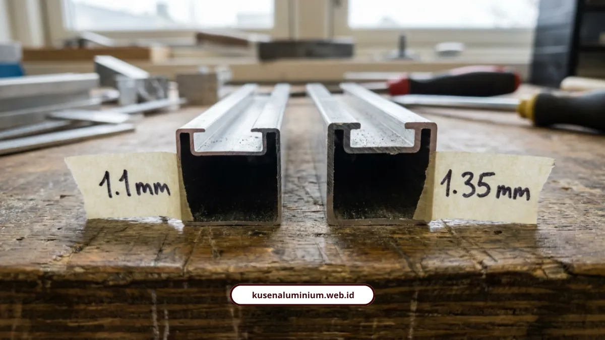

Ketebalan Profil Aluminium 1.1mm vs 1.35mm

📌 Ringkasan Inti
Selisih tipis 0,25 mm antara ketebalan profil aluminium 1,1 mm dan 1,35 mm memiliki dampak krusial terhadap kekuatan mekanis dan keamanan jangka panjang bukaan bangunan Anda:
- Selisih 0,25 mm sangat menentukan kekuatan cengkeraman sekrup engsel, ketahanan puntir rangka, serta efektivitas kekedapan suara dan udara.
- Dimensi profil 3 inci atau 4 inci hanyalah ukuran lebar visual tampak depan, bukan ukuran ketebalan dinding logam di dalam rongga ekstrusi.
- Profil 1,1 mm ideal untuk jendela interior ringan atau sekat ruangan, sedangkan ketebalan 1,35 mm ke atas wajib untuk kusen eksterior, pintu utama, dan bukaan lantai dua.
- Standar keamanan bukaan lantai dua mensyaratkan ketebalan minimal 1,2 mm hingga 1,35 mm guna menahan beban kaca berat serta terpaan angin kencang di ketinggian.
- Ketebalan 1,35 mm berbahan Architectural Billet AB45 / Alloy 6063-T5 berkekuatan tarik 28.000 psi merupakan syarat wajib RKS proyek infrastruktur pemerintah (Bina Marga, PPID RSGMP Unhas, SNI 07-0603-1989, dan ASTM B221M-91).
Ketebalan profil aluminium 1,1 mm dan 1,35 mm kelihatannya cuma beda tipis 0,25 mm, tapi dampaknya ke kekuatan cengkeraman sekrup, kekakuan rangka, sampai kekedapan suara bisa jauh berbeda. Buat Anda yang sedang memilih kusen untuk pintu utama atau bukaan lantai dua, selisih kecil ini justru yang menentukan kusen awet atau melorot dalam beberapa tahun.
Kenapa Banyak Orang Salah Kaprah Soal Ketebalan Aluminium?
Karena mereka mengira ukuran "3 inci" atau "4 inci" itu sama dengan ketebalan aluminiumnya, padahal dua hal yang berbeda. Lebar profil 3 inci atau 4 inci hanya menunjukkan dimensi visual rangka kalau dilihat dari depan.
Ketebalan profil aluminium justru merujuk pada tebal dinding tabung atau plat logam di dalam struktur rongga ekstrusi tersebut. Jadi dua kusen yang sama-sama berukuran 4 inci bisa punya ketebalan dinding logam yang jauh berbeda, misalnya 0,8 mm dibanding 1,35 mm.
Bedanya baru akan terasa setelah pemakaian beberapa tahun, saat kusen tipis mulai melenting atau daun pintunya melorot dari rel.

Apa Bedanya Ketebalan 1.1mm dan 1.35mm Secara Teknis?
Bedanya ada di lima aspek utama, mulai dari kegunaan sampai standar proyek yang mensyaratkannya. Berikut rinciannya:
| Parameter Teknis | Ketebalan 1,1 mm | Ketebalan 1,35 mm |
|---|---|---|
| Penggunaan utama | Jendela interior, sekat ruangan, jendela kecil | Kusen eksterior, pintu utama, bukaan lebar, gedung publik |
| Cengkeraman sekrup engsel | Ulir menggigit lebih sedikit, berisiko melorot | Cengkeraman kuat, menahan beban daun seumur hidup |
| Kekakuan rangka | Lebih fleksibel, berisiko melenting kena beban kaca berat | Tahan puntir, tidak mudah deformasi |
| Kekedapan suara dan udara | Standar, sesuai kebutuhan interior | Massa logam lebih padat, meredam suara lebih baik |
| Standar proyek struktural | Item non-struktural seperti lis plafon | Syarat minimal wajib RKS proyek infrastruktur |
M Rizal Ayuby dan Nizwa Rizqin Qinthara dari YKK AP Sinar Fortuna menjelaskan bahwa profil aluminium di bawah 1,0 mm untuk bukaan luar sangat berisiko mengalami masalah struktural.
Rangka bisa melenting saat diterpa angin kencang, daun pintu melorot dari rel, sampai sistem penguncian gagal berfungsi. Profil dengan ketebalan presisi 1,35 mm ke atas justru memastikan kerapatan jalur sealant sehingga sistem pintu dan jendela lebih kedap air, debu, dan suara.
Konsultasi Ketebalan Profil Kusen Aluminium Presisi di Malang Raya
Pastikan setiap bukaan pintu dan jendela hunian Anda menggunakan ketebalan profil aluminium yang tepat (1.1mm - 1.35mm+) sesuai perhitungan teknis beban angin dan kaca, didukung garansi pemasangan resmi.
Ketebalan Berapa yang Aman untuk Kusen Lantai 2?
Untuk kusen di lantai dua atau bukaan besar, standar aman minimalnya di rentang 1,2 mm sampai 1,35 mm ke atas. Semakin tinggi lokasi bukaan, semakin besar tekanan angin yang harus ditahan rangka.
ALUNA, penulis dan digital marketer B2B/B2C bidang material bangunan di ALUVE, mengulas bahwa setiap dimensi bukaan jendela memerlukan ketebalan kusen yang proporsional agar rangka tidak mudah melengkung.
Untuk jendela atau bukaan berukuran besar, disarankan memakai ketebalan minimal 1,2 mm sampai 1,35 mm ke atas demi menjamin keamanan mekanis jangka panjang.
Berikut klasifikasi lengkap standar ketebalan profil aluminium berdasarkan fungsi bangunannya:
- 0,8 mm sampai 1,0 mm: area interior ringan, jendela kecil dalam rumah, bidang yang tidak terpapar beban angin dan hujan.
- 1,1 mm sampai 1,2 mm: jendela rumah tinggal standar minor, atau profil 3 inci standar YKK AP.
- 1,35 mm sampai 1,5 mm: standar wajib untuk pintu utama rumah tinggal premium, pintu geser, dan kusen eksterior proyek gedung publik berbahan Architectural Billet AB45 atau alloy 6063-T5 dengan kekuatan tarik 28.000 psi.
- 2,0 mm sampai 3,0 mm: fasad bangunan komersial, curtain wall, gedung pencakar langit, atau wilayah pesisir dengan beban angin dan seismik tinggi.
Data ini sejalan dengan apa yang kami terapkan pada setiap pengerjaan jasa pasang kusen aluminium, di mana pemilihan ketebalan disesuaikan dulu dengan lokasi dan fungsi bukaan sebelum masuk tahap fabrikasi.
"Selisih 0,25 mm di profil aluminium itu seperti selisih tebal pondasi. Di tahun pertama mungkin belum kelihatan, tapi di tahun kelima saat engsel pintu menahan ribuan kali buka-tutup, ketebalan 1,35 mm membuktikan kekuatannya tanpa pernah melorot."
Apakah Ketebalan Profil Berpengaruh ke Kekedapan Suara?
Berpengaruh, karena semakin tebal dinding aluminium, semakin besar kerapatan massa yang bisa memantulkan dan meredam gelombang suara dari luar. Ini penting terutama untuk rumah di area padat lalu lintas atau dekat jalan raya.
Michael Chen, Manajer Pemasaran Yida Aluminium Technology Co., Ltd., menjelaskan dari sudut pandang akustik bahwa ketebalan profil ekstrusi aluminium berdampak langsung pada kinerja isolasi suara. Semakin tebal dinding aluminium, semakin besar kerapatan massa yang dapat memantulkan dan meredam transmisi gelombang suara eksternal.
Beberapa dokumen resmi proyek pemerintah juga sudah menetapkan standar ketebalan ini secara ketat. Direktorat Jenderal Bina Marga misalnya, memuat standar ketebalan profil aluminium ekstrusi minimal 1,35 mm dengan bahan campuran Architectural Billet 45 (AB45) berkekuatan 28.000 psi untuk fasilitas tol dan perkantoran.
Dokumen perencanaan PPID Universitas Hasanuddin untuk pembangunan RSGMP Unhas juga mengatur spesifikasi standar kusen dan rangka daun aluminium minimal 1,35 mm sesuai SNI 07-0603-1989 dan ASTM B221M-91.
Sementara RKS Renovasi Asrama Atlet Jatidiri dari Pemprov Jawa Tengah menetapkan standar deformasi maksimal 0,2 mm pada kusen profil 40x100 mm dengan ketebalan dinding 1,35 mm.
Kesimpulan
Selisih 0,25 mm antara ketebalan profil aluminium 1,1 mm dan 1,35 mm memang kelihatan sepele di atas kertas, tapi dampaknya nyata di kekuatan cengkeraman sekrup, kekakuan rangka, sampai kekedapan suara. Untuk pintu utama, pintu geser, atau bukaan di lantai dua, pilih yang 1,35 mm ke atas supaya tidak menyesal di kemudian hari.
Kalau Anda butuh bantuan menentukan ketebalan yang pas untuk bukaan di rumah atau proyek Anda, tim kami siap bantu hitungkan lewat layanan jasa pasang kusen aluminium. Anda juga bisa cek dulu hasil kerja nyata kami di galeri proyek sebelum memutuskan spesifikasi yang paling pas untuk kebutuhan Anda.
FAQ Seputar Ketebalan Profil Aluminium
Belum tentu, karena kekuatan ditentukan oleh ketebalan dinding logam, bukan lebar profilnya. Profil 3 inci dengan ketebalan 1,35 mm bisa lebih kuat dari profil 4 inci yang ketebalannya hanya 0,8 mm.
Ketebalan bisa dicek langsung dengan alat ukur jangka sorong pada bagian potongan profil, atau ditanyakan spesifikasinya ke pihak yang mengerjakan sebelum proyek dimulai. Spesifikasi ini biasanya juga tertulis di RAB atau shop drawing.
Tidak selalu langsung gagal, tapi risikonya meningkat seiring waktu terutama pada bukaan besar atau area yang sering terpapar angin kencang. Untuk penggunaan jangka panjang, ketebalan yang sesuai standar tetap jadi pilihan paling aman.